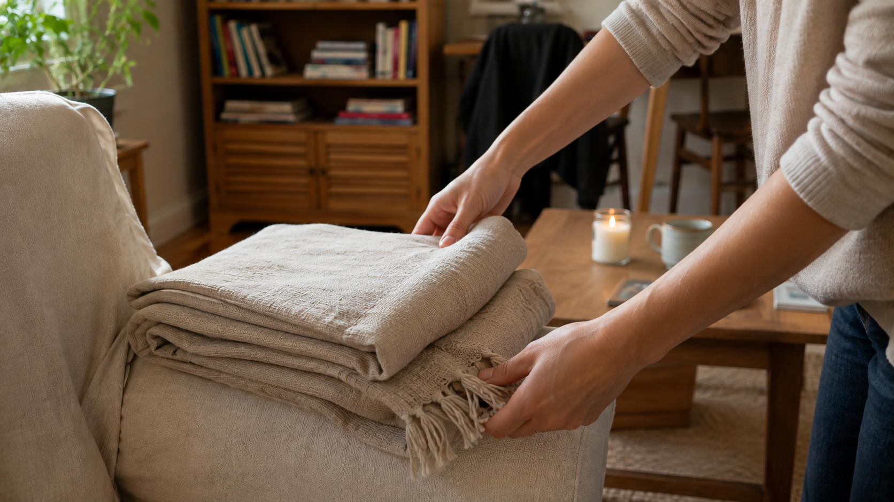

Sicher & werbefrei, nur hilfreiche Inhalte
Die 80 Prozent, die du mit wenig Aufwand erreichst, betreffen vor allem die sichtbare Ordnung. Die hintersten 20 Prozent sind oft Dinge, die niemand sieht, das perfekt geordnete Kabelfach, das alphabetisierte Gewürzregal, und die darfst du bewusst auf später verschieben.
Einfach umsetzbar, sofort wirksam
Mehr Ordnung in jedem Raum
Für die schönen Dinge im Leben
Ideen, die dich wirklich weiterbringen
Ich liebe es, Räume zu vereinfachen und Routinen zu schaffen, die den Alltag leichter machen. Auf aufräumliebe findest du ehrliche Ideen, die in echte Wohnungen und Familienleben passen.
Mehr Tipps, mehr Inspiration, mehr Aufräumliebe.
Sicher & werbefrei, nur hilfreiche Inhalte